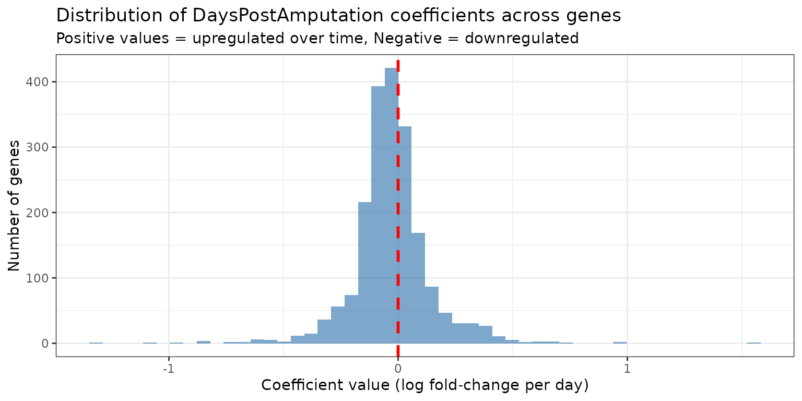

Differential expression with a continuous covariate
Source:vignettes/continuous_covariate.Rmd
continuous_covariate.RmdIntroduction
This vignette demonstrates how to use the devil package
to perform differential expression (DE) analysis with continuous
covariates. Specifically, we’ll analyze how gene expression
changes over time in an experiment where the continuous variable is days
post-amputation.
Setup and Data Loading
library(devil)
library(scRNAseq)
library(SingleCellExperiment)
library(Matrix)
library(dplyr)
library(ggplot2)
library(tidyr)
library(ggpubr)
# Load axolotl tail regeneration data
# This dataset contains scRNA-seq from regenerating tail tissue at different timepoints
sce <- scRNAseq::AztekinTailData()Data Preprocessing
Quality Filtering
We first filter out genes with very low expression to remove noise and improve computational efficiency:
counts <- assay(sce, "counts")
# Keep genes with:
# 1. Mean expression > 0.1 counts per cell
# 2. Detected in at least 100 cells
keep_genes <- rowMeans(counts) > 0.1 & rowSums(counts > 0) > 100
sce <- sce[keep_genes, ]
cat("After filtering:", nrow(sce), "genes and", ncol(sce), "cells\n")
#> After filtering: 7779 genes and 13199 cellsSubsampling for Quick Demonstration
For this vignette, we subsample the data so computations run quickly. In practice, you would use the full filtered dataset:
set.seed(123)
n_genes <- min(2000, nrow(sce))
n_cells <- min(5000, ncol(sce))
gene_idx <- sample(seq_len(nrow(sce)), n_genes)
cell_idx <- sample(seq_len(ncol(sce)), n_cells)
sce_sub <- sce[gene_idx, cell_idx]
cat("Working with:", nrow(sce_sub), "genes and", ncol(sce_sub), "cells\n")
#> Working with: 2000 genes and 5000 cellsBuilding the Design Matrix
Understanding the Covariate
Our main variable of interest is DaysPostAmputation, a
continuous variable representing time since amputation. Let’s examine
its distribution:
meta_df <- as.data.frame(colData(sce_sub))
# Check the range and distribution of DaysPostAmputation
cat("DaysPostAmputation range:",
min(meta_df$DaysPostAmputation), "to",
max(meta_df$DaysPostAmputation), "days\n")
#> DaysPostAmputation range: 0 to 3 days
table(meta_df$DaysPostAmputation)
#>
#> 0 1 2 3
#> 2004 1175 875 946Creating the Design Matrix
For a continuous covariate, the design matrix includes: 1. An
intercept term representing baseline expression 2. A
slope term for DaysPostAmputation
representing the rate of change per day
design <- model.matrix(
~ DaysPostAmputation,
data = meta_df
)
head(design, n = 10)
#> (Intercept) DaysPostAmputation
#> GCATACACAGCCAATT.1 1 2
#> ATAGACCAGTGCGATG.1 1 0
#> ATTACTCGTCTTCTCG.1 1 1
#> GGACAAGAGAGGGCTT.1 1 2
#> GATGCTACAGAGTGTG.1 1 0
#> CTCTAATTCAAACAAG.1 1 0
#> ACGTCAACAACACCTA.1 1 3
#> TGTGGTATCTCTAGGA.1 1 0
#> TCAGCTCCACAGGCCT.1 1 0
#> GTCCTCAAGCGATGAC.1 1 3
cat("\nDesign matrix columns:", colnames(design), "\n")
#>
#> Design matrix columns: (Intercept) DaysPostAmputation
cat("Design matrix dimensions:", nrow(design), "cells ×", ncol(design), "coefficients\n")
#> Design matrix dimensions: 5000 cells × 2 coefficientsInterpretation: - (Intercept): Expected
log-expression at day 0 - DaysPostAmputation: Change in
log-expression per additional day (i.e., the slope)
Fitting the devil model
Now, fit_devil() takes a count matrix and a design
matrix and returns coefficients and overdispersions.
Y <- as.matrix(assay(sce_sub, "counts"))
devil_fit <- devil::fit_devil(
input_matrix = Y,
design_matrix = design,
verbose = TRUE,
init_beta_rough = FALSE,
size_factors = "normed_sum",
overdispersion = "MOM"
)
#> Compute size factors
#> Calculating size factors using method: normed_sum
#> Size factors calculated successfully.
#> Range: [0.1246, 9.1512]
#> Initialize theta
#> Initialize beta
#> Fitting beta coefficients
#> Fit overdispersion (mode = MOM)Interpreting Model Coefficients
Coefficient Matrix Structure
The fitted model contains coefficient estimates (on the log scale) for each gene and each term in the design matrix:
Visualizing Coefficient Distributions
Let’s examine the distribution of the DaysPostAmputation
coefficient across all genes:
coef_df <- as.data.frame(beta_matrix) %>%
dplyr::mutate(gene = rownames(beta_matrix))
# Reshape for plotting
coef_long <- coef_df %>%
tidyr::pivot_longer(cols = -gene, names_to = "coefficient", values_to = "value")
# Plot distribution of DaysPostAmputation coefficient
ggplot(coef_long %>% dplyr::filter(coefficient == "DaysPostAmputation"), aes(x = value)) +
geom_histogram(bins = 50, fill = "steelblue", alpha = 0.7) +
geom_vline(xintercept = 0, linetype = "dashed", color = "red", linewidth = 1) +
theme_bw() +
labs(
title = "Distribution of DaysPostAmputation coefficients across genes",
subtitle = "Positive values = upregulated over time, Negative = downregulated",
x = "Coefficient value (log fold-change per day)",
y = "Number of genes"
)
Interpretation:
- Genes with positive coefficients increase expression over time
- Genes with negative coefficients decrease expression over time
- The magnitude indicates the rate of change per day
Differential Expression Testing
Testing for Time-Dependent Expression
We use a Wald test to identify genes whose expression significantly
changes with days post-amputation. The contrast vector
c(0, 1) tests the DaysPostAmputation
coefficient (second column in design matrix):
# Contrast vector: test the DaysPostAmputation coefficient
# c(Intercept, DaysPostAmputation)
contrast_vector <- c(0, 1)
de_res <- devil::test_de(
devil_fit,
contrast = contrast_vector,
clusters = meta_df$sample, # Account for sample-level correlation
max_lfc = 100
)
#> Converting clusters to numeric factors
# Add gene names
de_res$name <- rownames(beta_matrix)
head(de_res)
#> # A tibble: 6 × 4
#> name pval adj_pval lfc
#> <chr> <dbl> <dbl> <dbl>
#> 1 timm10b.S 0.633 0.961 -0.104
#> 2 nudcd2.L 0.519 0.934 -0.123
#> 3 srsf4.S 0.211 0.855 -0.100
#> 4 tmem144.L 0.397 0.929 0.173
#> 5 c1d.L 0.766 0.973 0.0523
#> 6 pop7.L 0.980 0.998 -0.00219Summary of DE Results
# Count significant genes at FDR < 0.05
de_summary <- de_res %>%
summarise(
total_genes = n(),
n_de = sum(adj_pval < 0.05),
n_upregulated = sum(adj_pval < 0.05 & lfc > 0),
n_downregulated = sum(adj_pval < 0.05 & lfc < 0),
pct_de = round(100 * n_de / total_genes, 1)
)
print(de_summary)
#> # A tibble: 1 × 5
#> total_genes n_de n_upregulated n_downregulated pct_de
#> <int> <int> <int> <int> <dbl>
#> 1 2000 20 10 10 1
cat("\n", de_summary$n_upregulated, "genes increase expression over time\n")
#>
#> 10 genes increase expression over time
cat(de_summary$n_downregulated, "genes decrease expression over time\n")
#> 10 genes decrease expression over timeVolcano Plot
Visualize the relationship between effect size (log fold-change per day) and significance:
devil:::plot_volcano(devil.res = de_res) +
labs(
title = "Volcano plot: Time-dependent gene expression",
x = "Log fold-change per day",
y = "-log10(Adjusted p-value)"
)
Visualizing Top DE Genes
Identify Top Genes
Select the 10 genes with the strongest time-dependent effects:
top_genes <- de_res %>%
dplyr::filter(adj_pval <= 0.05) %>%
dplyr::arrange(desc(abs(lfc))) %>%
dplyr::slice_head(n = 10) %>%
dplyr::pull(name)
cat("Top 10 time-responsive genes:\n")
#> Top 10 time-responsive genes:
print(top_genes)
#> [1] "loc549413.S" "Xelaev18045082m.g" "loc100486088.L"
#> [4] "hes5_X2.L" "Xetrov90029035m.L" "hes5.1.S"
#> [7] "Xelaev18007618m.g" "loc100492943.L" "hoxa13.L"
#> [10] "Xelaev18025819m.g"
# Show their statistics
de_res %>%
dplyr::filter(name %in% top_genes) %>%
dplyr::select(name, lfc, pval, adj_pval) %>%
dplyr::arrange(desc(abs(lfc))) %>%
print()
#> # A tibble: 10 × 4
#> name lfc pval adj_pval
#> <chr> <dbl> <dbl> <dbl>
#> 1 loc549413.S -1.90 0.0000106 0.00425
#> 2 Xelaev18045082m.g -1.59 0.000133 0.0205
#> 3 loc100486088.L 1.41 0.000000909 0.000909
#> 4 hes5_X2.L -1.22 0.0000333 0.00824
#> 5 Xetrov90029035m.L -1.20 0.000157 0.0224
#> 6 hes5.1.S -1.05 0.000000240 0.000480
#> 7 Xelaev18007618m.g 0.996 0.0000822 0.0149
#> 8 loc100492943.L 0.948 0.00000765 0.00383
#> 9 hoxa13.L -0.931 0.0000281 0.00824
#> 10 Xelaev18025819m.g 0.914 0.000448 0.0448Expression Trajectories Over Time
Create scatter plots showing how expression changes with days post-amputation for top genes:
counts <- assay(sce_sub, "counts")
# Function to plot gene expression vs. DaysPostAmputation
plot_gene_trajectory <- function(gene_name) {
stopifnot(gene_name %in% rownames(counts))
# Get gene info
gene_info <- de_res %>% dplyr::filter(name == gene_name)
df <- tibble(
DaysPostAmputation = as.numeric(as.character(sce_sub$DaysPostAmputation)),
expr = as.numeric(counts[gene_name, ])
)
# Create plot
p <- ggplot(df, aes(x = DaysPostAmputation, y = log1p(expr))) +
geom_point(
alpha = 0.3,
size = 1.5,
position = position_jitter(width = 0.08, height = 0),
color = "gray40"
) +
stat_summary(
fun = mean,
geom = "point",
size = 2.8,
color = "red"
) +
theme_bw() +
labs(
title = gene_name,
subtitle = sprintf(
"LFC/day = %.3f, adj. p = %.2e",
gene_info$lfc,
gene_info$adj_pval
),
x = "Days post amputation",
y = "log1p(Counts)"
) +
theme(plot.subtitle = element_text(size = 9))
return(p)
}Plot Top Upregulated and Downregulated Genes
# Get top upregulated and downregulated genes
top_up <- de_res %>%
dplyr::filter(adj_pval < 0.05, lfc > 0) %>%
dplyr::arrange(desc(lfc)) %>%
dplyr::slice_head(n = 2) %>%
dplyr::pull(name)
top_down <- de_res %>%
dplyr::filter(adj_pval < 0.05, lfc < 0) %>%
dplyr::arrange(lfc) %>%
dplyr::slice_head(n = 2) %>%
dplyr::pull(name)
# Create plots
plots <- lapply(c(top_up, top_down), plot_gene_trajectory)
# Arrange plots
ggpubr::ggarrange(
plotlist = plots,
ncol = 2,
nrow = 2,
align = "hv"
)
Interpretation:
- Each point represents a single cell
- The red point indicates the mean expression for a given day
Summary
This vignette demonstrated:
- Data preparation: Filtering and structuring single-cell RNA-seq data
- Design matrix: Creating a model with continuous covariates
-
Model fitting: Using
fit_devil()to estimate gene-specific parameters - Hypothesis testing: Identifying genes with significant time-dependent expression
- Visualization: Interpreting results through volcano plots and expression trajectories
sessionInfo()
#> R version 4.5.2 (2025-10-31)
#> Platform: x86_64-pc-linux-gnu
#> Running under: Ubuntu 24.04.3 LTS
#>
#> Matrix products: default
#> BLAS: /usr/lib/x86_64-linux-gnu/openblas-pthread/libblas.so.3
#> LAPACK: /usr/lib/x86_64-linux-gnu/openblas-pthread/libopenblasp-r0.3.26.so; LAPACK version 3.12.0
#>
#> locale:
#> [1] LC_CTYPE=C.UTF-8 LC_NUMERIC=C LC_TIME=C.UTF-8
#> [4] LC_COLLATE=C.UTF-8 LC_MONETARY=C.UTF-8 LC_MESSAGES=C.UTF-8
#> [7] LC_PAPER=C.UTF-8 LC_NAME=C LC_ADDRESS=C
#> [10] LC_TELEPHONE=C LC_MEASUREMENT=C.UTF-8 LC_IDENTIFICATION=C
#>
#> time zone: UTC
#> tzcode source: system (glibc)
#>
#> attached base packages:
#> [1] stats4 stats graphics grDevices utils datasets methods
#> [8] base
#>
#> other attached packages:
#> [1] ggpubr_0.6.2 tidyr_1.3.2
#> [3] ggplot2_4.0.1 dplyr_1.1.4
#> [5] Matrix_1.7-4 scRNAseq_2.24.0
#> [7] SingleCellExperiment_1.32.0 SummarizedExperiment_1.40.0
#> [9] Biobase_2.70.0 GenomicRanges_1.62.1
#> [11] Seqinfo_1.0.0 IRanges_2.44.0
#> [13] S4Vectors_0.48.0 BiocGenerics_0.56.0
#> [15] generics_0.1.4 MatrixGenerics_1.22.0
#> [17] matrixStats_1.5.0 devil_0.99.0
#>
#> loaded via a namespace (and not attached):
#> [1] RColorBrewer_1.1-3 jsonlite_2.0.0
#> [3] magrittr_2.0.4 GenomicFeatures_1.62.0
#> [5] gypsum_1.6.0 farver_2.1.2
#> [7] rmarkdown_2.30 fs_1.6.6
#> [9] BiocIO_1.20.0 ragg_1.5.0
#> [11] vctrs_0.6.5 memoise_2.0.1
#> [13] Rsamtools_2.26.0 DelayedMatrixStats_1.32.0
#> [15] RCurl_1.98-1.17 rstatix_0.7.3
#> [17] htmltools_0.5.9 S4Arrays_1.10.1
#> [19] AnnotationHub_4.0.0 curl_7.0.0
#> [21] broom_1.0.11 Rhdf5lib_1.32.0
#> [23] SparseArray_1.10.8 Formula_1.2-5
#> [25] rhdf5_2.54.1 sass_0.4.10
#> [27] alabaster.base_1.10.0 bslib_0.9.0
#> [29] desc_1.4.3 alabaster.sce_1.10.0
#> [31] httr2_1.2.2 cachem_1.1.0
#> [33] GenomicAlignments_1.46.0 lifecycle_1.0.5
#> [35] pkgconfig_2.0.3 R6_2.6.1
#> [37] fastmap_1.2.0 digest_0.6.39
#> [39] AnnotationDbi_1.72.0 ExperimentHub_3.0.0
#> [41] textshaping_1.0.4 RSQLite_2.4.5
#> [43] filelock_1.0.3 labeling_0.4.3
#> [45] httr_1.4.7 abind_1.4-8
#> [47] compiler_4.5.2 bit64_4.6.0-1
#> [49] withr_3.0.2 S7_0.2.1
#> [51] backports_1.5.0 BiocParallel_1.44.0
#> [53] carData_3.0-5 DBI_1.2.3
#> [55] HDF5Array_1.38.0 alabaster.ranges_1.10.0
#> [57] alabaster.schemas_1.10.0 ggsignif_0.6.4
#> [59] rappdirs_0.3.3 DelayedArray_0.36.0
#> [61] rjson_0.2.23 tools_4.5.2
#> [63] glue_1.8.0 h5mread_1.2.1
#> [65] restfulr_0.0.16 rhdf5filters_1.22.0
#> [67] grid_4.5.2 gtable_0.3.6
#> [69] ensembldb_2.34.0 utf8_1.2.6
#> [71] car_3.1-3 XVector_0.50.0
#> [73] BiocVersion_3.22.0 pillar_1.11.1
#> [75] BiocFileCache_3.0.0 lattice_0.22-7
#> [77] rtracklayer_1.70.1 bit_4.6.0
#> [79] tidyselect_1.2.1 Biostrings_2.78.0
#> [81] knitr_1.51 ProtGenerics_1.42.0
#> [83] xfun_0.55 UCSC.utils_1.6.1
#> [85] lazyeval_0.2.2 yaml_2.3.12
#> [87] evaluate_1.0.5 codetools_0.2-20
#> [89] cigarillo_1.0.0 tibble_3.3.1
#> [91] alabaster.matrix_1.10.0 BiocManager_1.30.27
#> [93] cli_3.6.5 systemfonts_1.3.1
#> [95] jquerylib_0.1.4 Rcpp_1.1.1
#> [97] GenomeInfoDb_1.46.2 dbplyr_2.5.1
#> [99] png_0.1-8 XML_3.99-0.20
#> [101] parallel_4.5.2 pkgdown_2.2.0
#> [103] blob_1.2.4 AnnotationFilter_1.34.0
#> [105] sparseMatrixStats_1.22.0 bitops_1.0-9
#> [107] alabaster.se_1.10.0 scales_1.4.0
#> [109] purrr_1.2.1 crayon_1.5.3
#> [111] rlang_1.1.7 cowplot_1.2.0
#> [113] KEGGREST_1.50.0